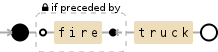
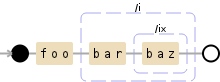
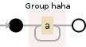
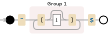
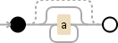

Sneak Preview of PCRE Support in Debuggex
I'm happy to announce that, starting on Saturday, Debuggex will have support for PCRE regular expressions!
Everybody will have free access until August 1st (tell your friends!). This will be extended until August 15th for those that login with their Persona account.
While I'm putting on the finishing touches, here's a preview:
-
Lookbehinds Debuggex shows you a backwards-facing sub-diagram to match your intuition about how a lookbehind works.
(?<!fire)truck -
More Flags PCRE supports more flags than JavaScript, and Debuggex now supports them as well. On top of that, Debuggex makes your life easier by showing you you exactly what your inline flags are acting upon.
foo(?i)bar(?x)baz #comment -
Named Groups Debuggex now supports named groups, so your expressions can be more readable.
(?<haha>a+) -
Recursion Recursion allows your regex to match any context-free grammar. With Debuggex, you can dive down through the recursion to see exactly what's going on. Here's an example that matches properly balanced parentheses.
^((?:\((?1)?\))+)$ -
Atomic Groups Atomic groups are used to improve the performance of your regex with certain engines. Debuggex gives you an indication that part of your expression is atomic.
a*+
There's a bunch more PCRE features in this release, as well as several JavaScript bugfixes. The renderer has been rewritten, so you should have a much more consistent experience across different expressions.
On Saturday, there'll be announcements on Hacker News and Reddit. If you're feeling generous, upvotes will be greatly appreciated :)